Programming PDF
Uml PDF
- UML class diagram definition
A class models a set of homogeneous objects through a name, typed attributes and operations; objects are its instances, linked to it by instance-of: classes form the intensional level, objects the extensional one. - Association, links and multiplicity definition
An association between and
and 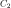
is a relation ; its instances are links (pairs of objects), its ends carry roles and multiplicities, and it can have attributes of its own.
; its instances are links (pairs of objects), its ends carry roles and multiplicities, and it can have attributes of its own. - Aggregation and composition definition
Both are whole–part associations; in composition (filled diamond) the whole owns the part, which lives and dies with it and belongs to one whole only, while in aggregation (hollow diamond) the part has a life of its own and can be shared. - Generalization (is-a) definition
A generalization makes every instance of a subclass an instance of its superclass, so the subclass inherits all attributes and associations; a family of subclasses can be disjoint and/or complete.
Memory PDF
- Memory model: static area, stack and heap model
A running program has a static area (globals, code), a stack of activation records (one per active call: parameters, locals, return address) that grows and shrinks with calls, and a heap for objects allocated on demand that outlive the call that created them. - Parameter passing definition
By value the callee gets a copy and cannot change the caller's variable; by address (pointer) or by reference it reaches the caller's variable; Java passes everything by value, but the value of an object variable is a reference.
Oop PDF
- Object-oriented programming definition
A program is a set of objects, each joining data (state) and the functions that act on it (behaviour) behind an interface; classes describe objects, inheritance and polymorphism let new classes extend old code without changing it. - Inheritance and overriding definition
A subclass is defined as an extension of a superclass: it inherits all its fields and methods, can add new ones and can override inherited methods; constructors are not inherited but chained, the superclass part being built first. - Polymorphism and dynamic binding definition
A variable of type T can refer to an object of any subtype of T; a method call on it executes the version of the dynamic (run-time) type of the object, not of the static (declared) type of the variable. - Abstract classes and interfaces definition
An abstract class has at least one method without a body and cannot be instantiated; an interface is a set of method signatures that classes implement, giving multiple inheritance of type without multiple inheritance of state. - Exceptions method
An exception is an object describing an abnormal event;throwinterrupts the normal flow, the run time unwinds the stack of calls until atryblock with a matchingcatchis found, separating error handling from the normal code and letting the caller, not the callee, decide what to do. - Information hiding and visibility definition
Each module hides its design decisions behind an interface; visibility modifiers (private, package, protected, public) state who may use each member, so the representation can change without touching the clients. - Liskov substitution principle theorem
If S is a subtype of T, objects of type T may be replaced by objects of type S without altering any desirable property of the program: a subclass may weaken preconditions and strengthen postconditions, never the opposite. - Overloading definition
Several functions in the same scope may share a name if their parameter lists differ; the compiler picks one at compile time from the static types of the arguments, while the return type alone never distinguishes two overloads. - Parnas principles and contracts definition
The client of a function must be given everything needed to use it and nothing more; the implementer must be given everything needed to implement it and nothing more: a specification is a contract of preconditions and postconditions.
Cpp PDF
- Public, protected and private inheritance in C++ definition
C++ derives withpublic,protectedorprivate; the mode caps the visibility of the inherited members in the derived class, and only public inheritance makes the derived class a subtype usable through base pointers and references. - Virtual functions and the virtual table construction
In C++ a method is dynamically bound only if declaredvirtualand called through a pointer or reference; the compiler implements it with a per-class table of function pointers, and every polymorphic base class needs a virtual destructor. - C++ named casts and RTTI definition
C++98 replaced C casts with four named ones:static_cast(conversions checked at compile time, including unchecked downcasts),dynamic_cast(checked downcast of polymorphic types,nullptrorstd::bad_caston failure),const_cast(add or removeconst) andreinterpret_cast(reinterpret the bits);typeidgives the dynamic type. - Pointers, references and dynamic memory in C++ definition
A pointer is a variable holding an address, which can be null and re-seated; a reference is an alias bound once to an existing object;newallocates on the heap and returns a pointer, and everynewneeds exactly onedelete. - Special member functions and RAII definition
Even an empty C++ class has a default constructor, a copy constructor, a copy assignment and a destructor generated by the compiler (plus move operations since C++11); they copy and destroy member by member, and= default/= deleterequest or forbid them explicitly. - Converting constructors and explicit definition
A constructor callable with one argument is also an implicit conversion: withA(int),f(3)compiles asf(A(3))anda = 3asa = A(3); declaring itexplicitforbids the silent conversion. - Exception-safety guarantees definition
A C++ operation that may throw promises one of three levels: the basic guarantee (no leaks, invariants hold, state valid but unspecified), the strong guarantee (commit or rollback: either it succeeds or nothing changed), or the nothrow guarantee (it never throws,noexcept); RAII gives the first, copy-and-swap the second. - Shallow and deep copy, rule of three construction
The generated copy copies pointers, not what they point to, so two objects end up sharing (and both deleting) one heap object; a class that owns memory must define destructor, copy constructor and copy assignment together. - Value categories and rvalue references definition
An lvalue names an object with an address that persists (it can stand left of); an rvalue is a temporary about to die (=3,a + b, a returned value); C++11'sT&&binds only to rvalues, so a function can tell "a copy is needed" from "the source can be plundered". - Move semantics and the rule of five construction
A move constructorA(A&&)and a move assignment transfer the resources of a dying object instead of copying them, leaving the source empty but valid; a resource-owning class defines destructor, copy constructor, copy assignment, move constructor and move assignment. - Forwarding references and perfect forwarding construction
In a template, a parameterT&&with deducedTbinds to both lvalues and rvalues (a forwarding reference): reference collapsing makesTan lvalue reference for lvalues;std::forward<T>(x)then passes the argument on with its original value category, which is howemplace_backandmake_uniquebuild objects in place without extra copies. - Operator overloading in C++ method
Most C++ operators can be redefined for classes, either as members (the left operand is*this) or as free functions (all operands are parameters);operator=only as a member; prefix++returns a reference, postfix++(int)a copy of the old value. - Function pointers and function objects definition
A function pointer stores the address of a function and calls it later; a function object (functor) is an instance of a class withoperator(), which can carry state; both let an algorithm take behaviour as a parameter. - Lambda expressions definition
[captures](params) -> ret { body }defines an unnamed function object where it is used; the capture list copies ([=],[x]) or references ([&],[&x]) variables of the enclosing scope, and that choice decides what the lambda sees when it runs later. - Multiple inheritance and the diamond definition
A C++ class can have several base classes; when two of them share a base (the diamond), the derived object contains two copies of it and inherited names become ambiguous, unless the shared base is inheritedvirtual, which keeps a single shared subobject constructed by the most derived class. - Smart pointers: unique_ptr, shared_ptr, weak_ptr construction
Class templates that own a heap object and delete it automatically:unique_ptris the single owner (movable, not copyable),shared_ptrcounts its owners and frees on the last,weak_ptrobserves a shared object without owning it and mustlock()to use it. - std::bitset example
std::bitset<N>is a fixed-size array of bits packed into machine words, with the bitwise operators
bits packed into machine words, with the bitwise operators & | ^ ~ << >>, indexing,set/reset/flip,countand conversions to and from strings and integers; is a template parameter, so the size is fixed at compile time. - The copy-and-swap idiom construction
Implement assignment as "take the argument by value, swap its contents with*this": the copy (or move) happens in the parameter, the swap cannot throw, and the old state dies with the parameter — one operator that is correct for self-assignment, gives the strong guarantee and serves both copy and move assignment.
Generic Programming PDF
- Generic programming definition
Writing types and algorithms with types as parameters, at the highest level of abstraction that does not lose efficiency; the parameter is fixed at compile time in C++ templates and checked at compile time then erased in Java generics. - C++ templates construction
template <typename T>introduces a function or class written for an unknown type; each use with concrete arguments instantiates a separate copy at compile time, arguments of function templates are deduced from the call, and specialisations replace the generic code for chosen arguments. - STL containers definition
The Standard Template Library separates containers (class templates that hold elements), iterators (positions in them) and algorithms (templates over iterators); sequence containers keep insertion order, associative ones keep elements sorted byoperator<, unordered ones hash them. - Iterators definition
An iterator is an object that behaves like a pointer into a container (*it,++it,==);begin()andend()give the half-open range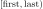
, and iterator categories (input, forward, bidirectional, random access) say which operations are allowed. - STL algorithms method
<algorithm>and<numeric>provide generic functions over iterator ranges —sort,find_if,count_if,transform,accumulate,binary_search— customised by predicates and comparators passed as functions, functors or lambdas. - Template metaprogramming construction
Template instantiation is a functional language evaluated by the compiler: recursion is a template that refers to itself, the base case is a specialisation, conditionals are partial specialisations; values and types are computed at compile time, and the mechanism is Turing complete. - Template specialization, SFINAE and concepts construction
A template can be given a separate definition for chosen arguments: full (explicit) specialization fixes all of them, partial specialization (class templates only) fixes a pattern such as "any pointer"; overload resolution silently discards templates whose substitution fails (SFINAE), which C++20 concepts replace with named, readable constraints.
Java PDF
- Casts, instanceof and array covariance definition
Upcasting (to a supertype) is implicit and always safe; downcasting(Sub) xis checked at run time and throwsClassCastExceptionif the dynamic type is wrong, so it is guarded withinstanceof; Java arrays are covariant, which is why storing into them is checked at run time too. - Java generics and type erasure construction
Since Java 5 classes, interfaces and methods can take type parameters (class Stack<T>,<T> T max(...)) checked at compile time; the compiler then erases them to their bounds (usuallyObject) and inserts casts, so one class serves all instantiations and no type information remains at run time. - The Java platform model
javaccompiles.javasources to bytecode in.classfiles; the Java Virtual Machine loads, verifies and runs that bytecode (interpreting and JIT-compiling it) on any operating system, with a garbage-collected heap and a large standard library. - Objects, references and garbage collection in Java definition
Java variables hold either a primitive value (int,double,boolean, …) or a reference to an object on the heap; objects are created only withnewand never freed explicitly: the garbage collector reclaims those no longer reachable. - The class Object and final definition
Every Java class descends fromjava.lang.Object, which gives all objectsequals,hashCode,toString,getClassandclone;finalon a class forbids subclasses and on a method forbids overriding, which also allows static binding. - The equals–hashCode contract theorem
equalsmust be an equivalence relation (reflexive, symmetric, transitive), consistent over time and false fornull; whoever overrides it must overridehashCodeso that equal objects have equal hashes, or hash-based collections will not find them. - Comparable and Comparator definition
A class implementsComparable<T>to give its natural order (a.compareTo(b)negative, zero or positive); a separateComparator<T>object gives any other order; both must define a total order, ideally consistent withequals. - Enumerated types definition
enumdefines a type whose only values are a fixed list of named constants; in Java an enum is a full class (implicitlyfinal, extendingjava.lang.Enum) that can have fields, constructors, methods and implement interfaces. - Exceptions in Java: checked, unchecked, finally definition
Java exceptions are objects of subclasses ofThrowable; checked exceptions (subclasses ofExceptionbut not ofRuntimeException) must be caught or declared withthrows, unchecked ones need not;finallyand try-with-resources guarantee clean-up. - The Java Collections Framework definition
A hierarchy of generic interfaces (Collection,List,Set,Queue,Map), implementations (ArrayList,LinkedList,HashSet,TreeSet,HashMap,TreeMap) and algorithms (Collections.sort,binarySearch, …); code is written against the interfaces and the implementation is chosen once, at construction. - How a hash table works (HashMap) construction
A hash table is an array of buckets; key
buckets; key  goes to bucket
goes to bucket  , collisions are chained in the bucket; with load factor
, collisions are chained in the bucket; with load factor  bounded (0.75 in
bounded (0.75 in HashMap), lookups cost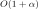
on average, and when is exceeded the table doubles and every entry is rehashed —
is exceeded the table doubles and every entry is rehashed —  amortised per insertion.
amortised per insertion. - Immutable objects definition
An immutable object cannot change after construction: all fieldsfinaland private, no setters, the classfinal, and defensive copies of mutable inputs and outputs; such objects are thread-safe without locks, safe as map keys and freely shareable —String, the wrappers and Java records are the standard examples. - Invariance of generics and wildcards theorem
If B is a subtype of A,G<B>is not a subtype ofG<A>, because aList<A>view would allow inserting an A into a list of B; wildcards recover flexibility:G<? extends A>is read-only covariant,G<? super A>write-only contravariant. - Iterators and for-each in Java definition
EveryCollection<E>gives anIterator<E>withhasNext(),next()andremove(); anyIterablecan be scanned with the for-each loop, which is compiled into an iterator; the iterator is the only safe way to remove elements while scanning. - Java streams and method references method
collection.stream()starts a pipeline of lazy intermediate operations (filter,map,sorted,distinct) closed by one terminal operation (collect,reduce,count,forEach); behaviour is passed as lambdas or method references (String::length), the Java counterpart of STL algorithms with predicates. - Nested, inner and anonymous classes definition
Java classes can be declared inside other classes: static nested classes are ordinary classes in the outer namespace, inner classes carry a hidden reference to an outer instance and see its fields, local and anonymous classes live in a method and capture its effectively final variables; a lambda is a compact anonymous implementation of a functional interface. - Packages definition
Every Java class belongs to a package, a named group that is both a namespace (java.util.List) and a unit of information hiding (members without modifier are visible only inside it);importlets a file use short names, and package names mirror directories. - Reading and validating user input example
From the console aScanneronSystem.inreads tokens, andhasNextInt()checks the type beforenextInt()consumes it; in a GUI the text of a field or dialog is parsed withInteger.parseInt, catchingNumberFormatException; in both cases invalid input is rejected and asked again. - Stack and queue as classes example
A stack (last in, first out) and a queue (first in, first out) are abstract data types defined by their operations; implemented as classes over an array that grows when full, they show encapsulation, constructors, deep copy and, deriving the queue from the stack, both the power and the danger of inheritance. - The Java method selection rule theorem
For a callx.f(a1,…,an)the compiler fixes the signature, choosing among the methods of the static type ofxthe most specific one applicable to the static types of the arguments; at run time the JVM executes the override of that exact signature in the dynamic type ofx. - Wrapper classes and autoboxing definition
Every primitive type has an immutable wrapper class (Integer,Double,Boolean, …) so that numbers can live where objects are required, such as in collections; since Java 5 the compiler converts between them automatically (autoboxing and unboxing).
Concurrency PDF
- Threads and data races definition
Threads are flows of execution of one process that share its heap and globals but each have their own stack; because the scheduler can preempt a thread between any two machine instructions, unsynchronised read–modify–write on shared data gives results that depend on the interleaving: a data race. - Atomics and mutual exclusion method
A data race is removed either by making the operation indivisible (std::atomic) or by enclosing the accesses in a critical section protected by astd::mutex, preferably locked through the RAII guardstd::lock_guardso that it is released on every exit path. - Condition variables and the producer–consumer problem method
A mutex makes a thread wait for access; a condition variable makes it wait for a condition (buffer not empty, not full):wait(lock, pred)atomically releases the mutex and sleeps until notified, then re-acquires it and re-checks the predicate, which also handles spurious wake-ups. - Deadlock and starvation theorem
A set of threads is deadlocked when each waits for a resource held by another; it needs mutual exclusion, hold-and-wait, no preemption and a circular wait at once, so breaking any one (for example, always locking in the same order) prevents it; starvation is a thread that never gets its turn. - Threads and monitors in Java definition
Every Java object has an intrinsic lock and a wait set, i.e. it is a monitor:synchronizedmethods or blocks acquire the lock (mutual exclusion),wait()releases it and sleeps untilnotify()=/=notifyAll(),volatileguarantees visibility of single variables; higher-level tools live injava.util.concurrent.
Gui PDF
- JavaFX: stage, scene and the node tree model
A JavaFX application extendsApplicationand builds, instart(Stage), a tree ofNodeobjects: the window is theStage, which shows oneScene, whose root is aParent(a node with children); leaves are shapes, images, text and controls. - Event-driven programming and event handlers model
A GUI program does not follow a fixed sequence: it registers handlers and waits; each user action becomes anEventobject delivered to the handlers of the target node, travelling from the stage down to the target (capturing, seen by filters) and back up (bubbling, seen by handlers). - JavaFX layout panes definition
Instead of positioning nodes by coordinates, one puts them in layout panes that compute positions and sizes automatically and recompute them when the window is resized: HBox/VBox in a row or column, BorderPane in five regions, GridPane in a grid, StackPane on top of each other. - Observer pattern and model–view–controller model
In the observer pattern a subject keeps a list of observers and notifies them when it changes, so it does not depend on who is listening; MVC builds GUIs on it: the model holds the data and notifies, views display it, controllers translate user events into model changes — in JavaFX, properties and bindings implement the pattern.
Hardware PDF
Combinational PDF
- Boolean algebra: axioms, theorems, complete operator sets theorem
On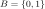
with AND, OR, NOT, four pairs of axioms (identity, commutativity, distributivity, complement) imply every identity used to shrink circuits — absorption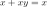
, adjacency , simplification
, simplification 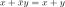
, consensus, De Morgan; each identity holds together with its dual, any one can be proved by perfect induction, and NAND alone (or NOR alone) is functionally complete. - Shannon expansion and canonical forms theorem
Shannon's theorem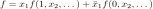
, applied to every variable, gives the first canonical form — the OR of the minterms where — and its dual gives the second — the AND of the maxterms where
— and its dual gives the second — the AND of the maxterms where 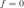
; canonical forms are unique, so two functions are equal iff their canonical forms are, and they prove that AND, OR, NOT can build any function in two levels. - Decoders, encoders and priority encoders construction
An -to-
-to- decoder raises exactly the output whose index is the input (each output is one minterm, nothing to simplify); an encoder does the reverse assuming one active input (
decoder raises exactly the output whose index is the input (each output is one minterm, nothing to simplify); an encoder does the reverse assuming one active input ( OR of the inputs whose index has bit set); a priority encoder returns the index of the highest active input plus a valid bit
OR of the inputs whose index has bit set); a priority encoder returns the index of the highest active input plus a valid bit  , and its table is written with don't-care inputs.
, and its table is written with don't-care inputs. - Karnaugh maps method
A Karnaugh map lays the truth table out in Gray order so that logically adjacent rows (differing in one variable) are geometrically adjacent, edges wrapping; rectangles of ones are products with fewer literals; the minimal SOP takes all essential prime implicants and covers the remaining ones with as few primes as possible, don't-cares counting as 1 when growing groups and as 0 when choosing them.
ones are products with fewer literals; the minimal SOP takes all essential prime implicants and covers the remaining ones with as few primes as possible, don't-cares counting as 1 when growing groups and as 0 when choosing them. - 7-segment decoder: don't-cares and joint minimization example
Each of the seven segments is a separate 4-input function of the digit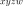
; for hexadecimal digits segment needs 14 literals, but if only BCD digits 0–9 can occur the six unused codes are don't-cares and
needs 14 literals, but if only BCD digits 0–9 can occur the six unused codes are don't-cares and 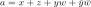
needs 6; across outputs a product already built for one segment can be reused by another even when it is not prime there. - Multiplexer and demultiplexer construction
A-to-1 multiplexer routes one of data inputs to the output under an -bit select,  for two inputs; large ones are built as trees of small ones (Shannon expansion in hardware), any function of variables is a mux with the truth table on its data inputs; the demultiplexer does the reverse, a decoder whose outputs are gated by one data line.
for two inputs; large ones are built as trees of small ones (Shannon expansion in hardware), any function of variables is a mux with the truth table on its data inputs; the demultiplexer does the reverse, a decoder whose outputs are gated by one data line. - NAND–NAND and NOR–NOR realizations construction
Applying De Morgan twice, a minimal SOP becomes
becomes 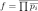
: every AND and the final OR turn into NANDs with the same implicants; dually a minimal POS becomes a NOR–NOR network; single literals entering the output gate directly must be complemented. - Timing diagrams and static hazards definition
With gate delays a correct two-level circuit can glitch: when an input change moves the input point from one implicant to another and the first switches off before the second switches on, an output that should stay 1 drops briefly (static-1 hazard); on the Karnaugh map it is a jump between adjacent ones not covered by a common group, and adding the bridging consensus implicant removes it at the cost of minimality.
Sequential PDF
- Sequential circuits: memory through feedback definition
A combinational circuit gives the same output for the same input; a function whose output depends on the input history is sequential and needs memory, obtained by feeding an output back to an input (the boiler controller ); separating the memory into well-understood elements and updating it only at clock events gives synchronous circuits, otherwise the circuit is asynchronous and can race or oscillate.
); separating the memory into well-understood elements and updating it only at clock events gives synchronous circuits, otherwise the circuit is asynchronous and can race or oscillate. - SR latch and D latch construction
Two cross-coupled NOR gates store one bit: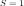
sets ,
,  resets it,
resets it,  holds;
holds;  forces
forces 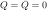
and, if both are released together, a race decides the final value, so it is forbidden; the NAND version has active-low inputs; gating with an enable and driving
and driving  ,
,  gives the D latch, transparent while
gives the D latch, transparent while  and holding while
and holding while  .
. - Edge-triggered flip-flops: master–slave construction
A latch in a feedback loop is transparent for the whole active clock phase, so the state can change several times per cycle (the circuit oscillates, at a rate set by its delays); two latches clocked in opposition — master open while the clock is high, slave open while it is low — are never transparent end to end, so the output changes once per clock edge and takes the value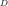
had just before that edge. - Analysis of synchronous sequential circuits method
In a synchronous circuit the state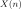
held by the flip-flops and the inputs of clock cycle determine the next state
of clock cycle determine the next state  and the outputs
and the outputs  ; to analyse a circuit, read
; to analyse a circuit, read  from the logic driving each flip-flop input and
from the logic driving each flip-flop input and  from the logic driving the outputs, tabulate them over all
from the logic driving the outputs, tabulate them over all  state–input combinations and draw the state diagram.
state–input combinations and draw the state diagram. - Synthesis of finite-state machines method
Designing an FSM is analysis run backwards: identify the states (what the machine must remember), draw the transitions, encode the states, choose the flip-flops, write the state table, minimize next-state and output logic with Karnaugh maps, draw the circuit; the 1101 recognizer needs 4 states,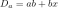
,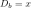
,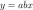
with Gray encoding, or four simple OR-of-arcs equations one-hot. - Mealy versus Moore machines definition
In a Moore machine the outputs depend only on the present state, so they are written inside the states, are constant for the whole clock cycle and react to an input one cycle late; in a Mealy machine they depend on state and inputs, are written on the arrows, react within the same cycle and often need fewer states — but they follow input glitches and two Mealy machines connected in a loop can close a combinational cycle. - Algorithmic state machine (ASM) charts definition
An ASM chart draws a state machine as a flowchart: a rectangle per state with its Moore outputs, diamonds testing input conditions (one true and one false exit), rounded boxes for conditional (Mealy) outputs; arrows from one state to the next may pass through several decisions, but every path must end in a state, and inputs are never assigned nor outputs tested. - Critical races definition
When a transition changes several state bits, or several flip-flops see an input that changes near the clock edge, the bits may switch at different times and the machine may land in a wrong or nonexistent state; a race is critical when the final state depends on the order; asynchronous circuits must avoid it with adjacent encodings (extra states if necessary), synchronous circuits are immune on the state but not on asynchronous inputs, which are fixed by encoding the possible destinations one bit apart or by synchronizing the input with a flip-flop. - D, T, JK and SR flip-flops: characteristic and excitation tables definition
Each edge-triggered flip-flop type is described by a characteristic equation (next state from inputs) — D: , T:
, T: 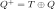
, JK: , SR:
, SR:  with
with  — and, for synthesis, by its excitation table (inputs needed for each transition
— and, for synthesis, by its excitation table (inputs needed for each transition 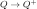
); with T or JK the next-state maps are replaced by maps of the flip-flop inputs, often simpler thanks to the don't-cares. - Registers and shift registers construction
A register is a group of D flip-flops on the same clock holding logically related bits; a load enable is built with a 2-to-1 multiplexer in front of each flip-flop ( ), not by gating the clock; a shift register chains the flip-flops so the content moves one position per edge, and with a 4-input mux per bit it can hold, shift either way or load in parallel.
), not by gating the clock; a shift register chains the flip-flops so the content moves one position per edge, and with a 4-input mux per bit it can hold, shift either way or load in parallel. - Synchronous counters construction
A counter is a register stepping through a prescribed sequence on each clock edge (with no inputs the transitions are unconditional); a mod-16 binary counter has next-state equations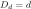
, , … or simply a register fed by an incrementer; a BCD counter treats codes 10–15 as don't-cares; terminal count and enable let counters be cascaded into clocks and timers.
, … or simply a register fed by an incrementer; a BCD counter treats codes 10–15 as don't-cares; terminal count and enable let counters be cascaded into clocks and timers. - Recurring state-machine patterns construction
A few fragments recur in every controller: busy-wait (a self-loop until a signal arrives), choice (branch on a signal), fire-and-check (start a counter or slow unit, then wait for its terminal count), edge detection (wait for 1, then for 0) and the one-cycle pulse; Moore versions react one cycle late and can miss short pulses, conditional (Mealy) outputs react at once; the simplest any-edge detector is one flip-flop and an XOR. - The RTL design method: datapath and control unit method
Large systems are split into a datapath (registers, counters, arithmetic, multiplexers: where data live and are transformed) and a control unit (a state machine deciding which operation happens in each cycle); the controller is first written with symbolic micro-operations (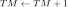
,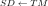
) and conditions, the datapath is built to execute them, then each micro-operation and condition is encoded as control and status signals. - Register transfers: multiplexers, buses, tri-state construction
Data move between registers of bits through a dedicated mux per register (any set of transfers in one cycle,  -input muxes, wiring explodes), a shared bus driven by one mux (one value per cycle, every register may load it) or a tri-state bus (registers drive the bus through enabled buffers: same transfers as the mux bus, minimal wiring, best scalability, but at most one enable active at a time).
-input muxes, wiring explodes), a shared bus driven by one mux (one value per cycle, every register may load it) or a tri-state bus (registers drive the bus through enabled buffers: same transfers as the mux bus, minimal wiring, best scalability, but at most one enable active at a time). - State minimization method
Two states are equivalent when, for every input sequence, they produce the same output sequence; equivalent states can be merged without changing the behaviour; the minimal machine is found by partition refinement — split first by outputs, then repeatedly split any block whose states move, on some input, into different blocks — until nothing changes. - Worked design: a vending-machine controller example
A typical design problem — decode 3-bit serial commands (start bit + 2 bits), drive a credit accumulator with , dispense when the credit is at least 30 and return change one coin per cycle — is solved with a 9-state machine whose decoding states are a tree on the serial bits, whose fixed operations are chains of Moore states and whose change loop is a single state with outputs conditioned on the status signal
, dispense when the credit is at least 30 and return change one coin per cycle — is solved with a 9-state machine whose decoding states are a tree on the serial bits, whose fixed operations are chains of Moore states and whose change loop is a single state with outputs conditioned on the status signal 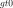
.
Complexity PDF
- Computational complexity and big-O definition
 if
if  for some
for some  and all
and all  : the growth rate of the number of operations (time) or memory cells (space) as the size of the problem grows, ignoring constants; polynomial is tractable, exponential is not.
: the growth rate of the number of operations (time) or memory cells (space) as the size of the problem grows, ignoring constants; polynomial is tractable, exponential is not. - Digital design flow and abstraction levels model
A digital system is designed top-down through levels of abstraction — system, architecture (register transfer), logic, circuit, layout — each refined into the next by synthesis tools and checked by simulation and timing analysis, while trading off area, delay and power. - Hard optimization problems and heuristics definition
Most design-automation problems — minimum logic cover, placement, state encoding, scheduling under resource constraints — ask for the cheapest legal configuration among exponentially many; they are NP-hard, so tools use exact algorithms only on small or special instances and heuristics elsewhere.
Programmable Logic PDF
- Logic functions as memories construction
Any Boolean function of inputs and outputs is a truth table of words of bits: store it in a memory whose address is the input, and reading the memory evaluates the function; the decoder is a fixed AND plane of all minterms, the stored bits an OR plane. - PLA and PAL construction
Two-level programmable logic: a programmable AND plane forms product terms of the inputs and their complements, an OR plane sums them into the outputs; a PLA programs both planes, a PAL only the AND plane with a fixed number of products per output. - Programming technologies definition
A programmable connection is a fuse (blown to open), an antifuse (shorted to close), a floating-gate transistor whose threshold is shifted by trapped charge (EPROM, EEPROM, Flash) or a transistor driven by an SRAM cell; they differ in reprogrammability, volatility, area and speed. - FPGA architecture model
A field-programmable gate array is a grid of configurable logic blocks — lookup tables of 4–6 inputs plus flip-flops — surrounded by programmable routing (switch boxes) and I/O blocks, with hard blocks for memory (BRAM), arithmetic (DSP, carry chains) and clocks; all configured by SRAM cells loaded with a bitstream.
Vhdl PDF
- VHDL: entity and architecture definition
A VHDL design unit has an entity, the external view (name, generics and ports with mode and type), and one or more architectures, the implementation, written in structural, data-flow or behavioural style; a hardware description language describes concurrent hardware, not a sequence of instructions. - std_logic: nine-valued logic and resolution definition
std_logichas nine values —Uuninitialised,Xunknown,0,1,Zhigh impedance,Wweak unknown,Lweak 0,Hweak 1,-don't care — and a resolution function that computes the value of a signal driven by several sources, which models buses and tri-state outputs. - Concurrent assignments: when–else and with–select definition
Data-flow VHDL describes combinational logic with concurrent assignments: plain equations, conditionalwhen ... else(a priority chain of conditions) and selectedwith ... select(a multiplexer on the values of one expression, all choices mutually exclusive and covered). - Processes and sequential statements definition
Aprocessis one concurrent statement whose body runs sequentially (if,case,for, variables) each time a signal in its sensitivity list changes; to describe combinational logic the list must contain every signal read and every output must be assigned on every path, otherwise a latch is inferred. - Flip-flops and registers in VHDL construction
A clocked process that assigns signals only insideif rising_edge(clk)describes edge-triggered D flip-flops; a reset tested before the edge is asynchronous, one tested inside it synchronous; an enable is anifinside the edge; a latch, by contrast, is level-sensitive and arises from incomplete combinational code. - Finite-state machines construction
An FSM is : a state register plus next-state logic
: a state register plus next-state logic 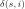
and output logic, in a Moore machine or
in a Moore machine or 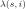
in a Mealy machine; in VHDL it is an enumerated state type, one clocked process for the register and one combinational process for and
and 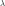
. - Signals versus variables theorem
A signal assignments <e= schedules a new value that becomes visible only after the process suspends (one delta cycle later); a variable assignmentv :e= takes effect immediately and is local to the process; so inside one process run, reading a signal after assigning it still gives the old value. - State encoding of FSMs method
The same FSM can store its state as a binary number (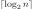
flip-flops, complex decoding), one-hot ( flip-flops, one per state, simple and fast logic), Gray (adjacent codes for frequent transitions, low power) or a custom code; the choice trades flip-flops against next-state logic, speed, power and robustness. - Structural VHDL: components, port maps, generics construction
A structural architecture instantiates components and connects their ports to signals withport map(by position or by name);genericparameters such as a width are fixed per instance withgeneric map, andfor ... generatereplicates instances. - Testbenches method
A testbench is an entity without ports that instantiates the design under test, drives its inputs from processes withwait fordelays, generates the clock, and checks the outputs withassert ... report ... severity; it uses non-synthesisable VHDL and exists only for simulation.
Simulation PDF
- Event-driven logic simulation method
A logic simulator keeps a queue of future events ordered by time; it repeatedly takes the earliest events, updates the signals, evaluates only the gates whose inputs changed, and schedules their new outputs after their delays; the cost depends on how the queue is stored: linked list, balanced tree or timing wheel. - Delta cycles model
Zero-delay assignments are not instantaneous in simulation: each takes one delta cycle, an infinitesimal step at the same simulated time; the simulator alternates "update signals" and "run woken processes" until no event is left at that time, which orders cause and effect without real delay.
Timing PDF
- Setup and hold constraints inequality
Data must be stable at a flip-flop's input from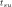
before to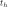
after the clock edge; between two registers this gives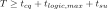
(setup, fixes the clock period) and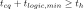
(hold, independent of the clock). - Clock skew and jitter definition
Skew is the difference in arrival time of the same clock edge at two registers, jitter the variation of the period from cycle to cycle; skew in the direction of data flow relaxes setup and tightens hold, jitter always reduces the usable period, so balanced clock trees and an uncertainty margin are built into timing analysis. - Gate and wire delay models model
A gate's delay grows with the capacitance it drives: to first order , an intrinsic part plus a part proportional to the load (fanout gates and wire); libraries tabulate delay and output slew against input slew and load, and wires add an RC delay.
, an intrinsic part plus a part proportional to the load (fanout gates and wire); libraries tabulate delay and output slew against input slew and load, and wires add an RC delay. - Static timing analysis method
STA checks timing without simulation: on the DAG of the combinational logic between registers it propagates the latest arrival times forward (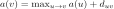
), the required times backward (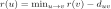
), and reports the slack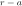
of every node; negative slack marks violating paths, in time linear in the circuit size. - False paths definition
A path is false if no input vector can propagate a transition along it, because the conditions that make one gate on the path sensitive force another gate on it into its controlling value; STA's longest topological path may be false, so the true delay of the circuit can be shorter. - Metastability and synchronizers theorem
When a flip-flop samples an input that changes inside its setup–hold window it may hang between 0 and 1 for an unbounded time, resolving with probability that decays exponentially,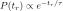
; a chain of two flip-flops gives the first one a whole clock period to resolve, raising the mean time between failures to years. - Retiming method
Moving registers across combinational gates — from all inputs of a gate to its output or back — does not change the input–output behaviour seen at the cycle level but changes the length of the register-to-register paths, so the clock period can be reduced (or the number of registers minimised). - Pipelining construction
Inserting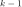
register stages into a feed-forward circuit of delay splits it into stages of about  : the clock period, and hence the throughput, improves almost times, while the latency grows to cycles and every stage adds register overhead.
: the clock period, and hence the throughput, improves almost times, while the latency grows to cycles and every stage adds register overhead.
Logic Synthesis PDF
- Algebraic (weak) division method
Treating a sum of products as a polynomial, with the quotient
with the quotient  the largest expression whose product with
the largest expression whose product with  uses only cubes of
uses only cubes of  ; algebraic division ignores Boolean identities such as
; algebraic division ignores Boolean identities such as  , which makes it fast and the basis of extraction, substitution and factoring.
, which makes it fast and the basis of extraction, substitution and factoring. - Shannon cofactors and the Boolean difference definition
Every function splits as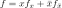
(Shannon); the Boolean difference is 1 exactly for the inputs where changing
is 1 exactly for the inputs where changing  changes , so its complement gives the observability don't-cares used to simplify nodes.
changes , so its complement gives the observability don't-cares used to simplify nodes. - Multi-level logic optimization method
A Boolean network is a DAG of nodes, each a sum of products of its fan-ins; it is optimised for area (number of literals) by structural operations — decomposition, extraction, substitution, factoring, elimination — and by node simplification with don't-cares, applied iteratively by heuristic scripts. - Tree height reduction method
Associativity and commutativity rebalance a chain of identical operations into a tree of depth , and late-arriving inputs are moved close to the output; distributivity can reduce height further at the cost of more operators. - Generalized bypass and select transforms construction
To speed up a late signal that crosses a long chain to , the bypass transform adds a path that uses only where it matters (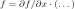
), and the select transform computes and
and 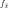
in advance and lets choose between them with a multiplexer; carry-skip and carry-select adders are the arithmetic instances. - Technology mapping by tree covering method
The optimised network is decomposed into a subject graph of NAND2 and inverters, every library cell is described by pattern graphs in the same base, and the subject graph is covered by patterns at minimum cost; on trees, dynamic programming from the leaves gives the optimal cover in linear time. - Technology mapping for delay method
Tree covering minimises arrival time instead of area by replacing the sum with a max: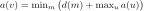
; since a gate's delay depends on the load it drives, which is unknown bottom-up, each node keeps a set of solutions per possible load, or the area–delay Pareto front. - Two-level minimization: prime implicants and covers method
A minimum sum of products is a cover of the on-set by prime implicants (cubes that cannot be enlarged without hitting the off-set); Quine–McCluskey generates all primes by merging cubes differing in one variable, essential primes are taken first, and the rest is a set-cover problem — NP-hard in general, solved heuristically by Espresso.
Power PDF
- Power dissipation in CMOS model
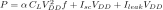
: dynamic switching power (activity, switched capacitance, the square of the supply, frequency), short-circuit power during transitions, and static leakage; the quadratic dependence on  makes the supply the strongest lever.
makes the supply the strongest lever. - Clock gating and operand isolation construction
Registers that keep their value still burn power on every clock edge (clock tree, flip-flop internals); clock gating stops the clock of a register bank when its enable is off, using a latch plus AND cell so the gated clock has no glitches; operand isolation similarly freezes the inputs of unit whose result is not used. - Signal and transition probabilities method
If a node is 1 with probability and successive cycles are independent, its
and successive cycles are independent, its  transition probability is
transition probability is  ; output probabilities follow from input ones gate by gate (
; output probabilities follow from input ones gate by gate ( ,
, 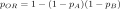
) as long as the inputs are independent, which reconvergent fanout breaks. - Encodings and orderings for low power construction
The same information can be sent with fewer bit flips: Gray code changes one bit per count step, bus-invert coding sends plus an invert line when more than half the bits would flip, FSM states with frequent transitions get adjacent codes, sign-magnitude suits small signed samples, and high-activity signals are connected late in a gate chain.
plus an invert line when more than half the bits would flip, FSM states with frequent transitions get adjacent codes, sign-magnitude suits small signed samples, and high-activity signals are connected late in a gate chain. - Glitches definition
When the inputs of a gate arrive at different times, its output can make spurious transitions before settling; glitches waste dynamic power (up to a large fraction in arithmetic circuits) and can corrupt asynchronous signals; balancing path delays, adding redundant terms and registering signals reduce them. - Power gating and leakage reduction construction
Clock gating stops dynamic power but not leakage; power gating disconnects an idle block from the supply with a high-threshold sleep transistor (header or footer), cutting leakage by orders of magnitude, at the cost of wake-up time and energy, isolation cells on the outputs and retention registers for state that must survive. - Voltage scaling, DVFS and parallel datapaths method
Lowering cuts energy quadratically but slows the gates; parallel or pipelined datapaths recover the throughput at the lower voltage, so a duplicated unit at half frequency and reduced voltage can do the same work for roughly 40% of the power; DVFS adapts voltage and frequency to the current load.
High Level Synthesis PDF
- Data-flow graphs and architectural synthesis definition
High-level synthesis turns an algorithm into a datapath plus a controller: the computation becomes a sequencing graph (operations as vertices, data dependences as edges), then scheduling assigns each operation a clock cycle and binding assigns it a functional unit and its values registers. - ASAP and ALAP scheduling, mobility method
Without resource limits, ASAP starts each operation as soon as its predecessors finish, giving the minimum latency ; ALAP starts it as late as possible within ; the mobility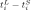
of an operation says how much freedom it has, and zero-mobility operations form the critical path. - List scheduling method
Scheduling with limited resources is NP-hard; list scheduling goes cycle by cycle, keeps the operations whose predecessors are done (ready list) and starts as many as the free units allow, choosing by priority — usually the smallest mobility or the longest path to the sink; a dual version minimises resources under a latency bound. - Resource sharing and binding method
After scheduling, operations of the same type that never run in the same cycle can share a unit, and values whose lifetimes do not overlap can share a register; minimum sharing is colouring the conflict graph (or partitioning the compatibility graph into cliques), solved exactly for register lifetimes by the left-edge algorithm on interval graphs.
Arithmetic PDF
- Full adder and ripple-carry adder construction
A full adder computes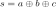
and ; chaining of them adds -bit numbers with delay
; chaining of them adds -bit numbers with delay 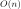
, because the carry ripples through every stage; in two's complement the same circuit subtracts ( ).
). - BCD adder construction
BCD codes each decimal digit in 4 bits (codes 1010–1111 unused); a 4-bit binary adder gives the right digit only when the sum is at most 9, so a correction stage adds 6 and emits a decimal carry when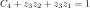
; cascading one such cell per digit adds multi-digit decimal numbers. - Binary numbers and two's complement definition
In two's complement an-bit word  stands for
stands for 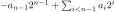
, range![\([-2^{n-1},2^{n-1}-1]\)](m/beeb363afe35f2e42a0122513e5d48f55b139a45.svg) , with a single zero;
, with a single zero; 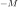
is obtained by inverting all bits and adding 1, so one adder both adds and subtracts (XOR on , carry-in 1), and signed overflow happens when the last two carries differ — not when the final carry is 1.
, carry-in 1), and signed overflow happens when the last two carries differ — not when the final carry is 1. - Bit-serial arithmetic construction
A serial adder processes one bit per clock, least significant first, with one full adder and a flip-flop holding the carry: cycles per -bit addition, constant area; serial and digit-serial units trade throughput for area and wiring, and fit serial data streams. - Carry-lookahead and prefix adders construction
Unrolling shows that carries are a prefix computation with the associative operator
shows that carries are a prefix computation with the associative operator  ; computing group generates and propagates in a tree gives all carries in
; computing group generates and propagates in a tree gives all carries in  levels instead of .
levels instead of . - Carry-save adders and adder trees construction
A row of full adders with no carry chain reduces three-bit operands to two (a sum word and a carry word shifted left) in the delay of one full adder; a tree of such 3:2 compressors reduces operands to two in  levels, and only the last addition needs a carry-propagate adder.
levels, and only the last addition needs a carry-propagate adder. - CORDIC method
CORDIC rotates a vector by any angle using only shifts, additions and a small table: the angle is decomposed into micro-rotations by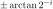
, each of which multiplies by , so after steps it yields  , (or magnitude and
, (or magnitude and  ) to bits, scaled by a constant gain
) to bits, scaled by a constant gain  .
. - Datapath subsystems: detectors, shifters, counters construction
Small blocks recur in every datapath: zero/one detectors (wide AND/OR trees), shifters (a barrel shifter shifts by any amount in multiplexer levels), thermometer encoders, and counters — binary, ring (one-hot) and Johnson (twisted ring), which trade flip-flops for decoding simplicity and speed.
multiplexer levels), thermometer encoders, and counters — binary, ring (one-hot) and Johnson (twisted ring), which trade flip-flops for decoding simplicity and speed. - Multipliers construction
An multiplication sums partial products , each a row of AND gates; an array of carry-save adders reduces them in delay, a Wallace tree in , and Booth recoding halves the number of rows; a sequential shift-and-add multiplier uses one adder for cycles. - FIR filter architectures construction
: in direct form a delay line feeds multipliers and a chain of adders (critical path one multiplier plus adders); retiming the delays across the adders gives the transposed form, critical path one multiplier and one adder; a serial version uses one MAC for cycles. - Fixed-point arithmetic definition
Hardware DSP stores real numbers as integers with an implicit binary point: in Qm.n a word of bits represents ; addition aligns points, multiplication adds fraction bits (Qa.b × Qc.d → Q(a+c+1).(b+d)), and every step must choose rounding versus truncation and saturation versus wrap-around.
bits represents ; addition aligns points, multiplication adds fraction bits (Qa.b × Qc.d → Q(a+c+1).(b+d)), and every step must choose rounding versus truncation and saturation versus wrap-around. - Iterative magnitude comparator construction
Comparing two-bit unsigned numbers bit by bit from the most significant end, each cell passes "already greater / already less" downwards and decides only if everything above was equal: , ,  ; the structure is the ripple-carry adder's, with the same linear delay and the same look-ahead tricks.
; the structure is the ripple-carry adder's, with the same linear delay and the same look-ahead tricks. - Radix-4 Booth recoding construction
Rewriting the two's-complement multiplier in digits
in digits  , each computed from an overlapping triple of bits , halves the number of partial products; every partial product is
, each computed from an overlapping triple of bits , halves the number of partial products; every partial product is  , or — a shift and an inversion — and signed operands are handled directly.
, or — a shift and an inversion — and signed operands are handled directly.
Processors PDF
- Datapath and control unit model
A processor is a datapath — register file, function unit (ALU + shifter), buses, multiplexers, memory interface — steered cycle by cycle by a control word (register addresses, mux selects, operation code, write enables) produced by a control unit that sequences instructions. - Arithmetic logic unit construction
One adder plus "B input conditioning" (pass,  , 0 or all ones) and the carry-in implements add, subtract, increment, decrement and transfer; a logic unit computes AND, OR, XOR, NOT bitwise; a function-select code chooses the operation, and flags report the result.
, 0 or all ones) and the carry-in implements add, subtract, increment, decrement and transfer; a logic unit computes AND, OR, XOR, NOT bitwise; a function-select code chooses the operation, and flags report the result. - The RISC-V base instruction set (RV32I) definition
RV32I is a load–store RISC ISA with 32 registers of 32 bits ( ), fixed 32-bit instructions in six formats (R, I, S, B, U, J) that keep the register fields
), fixed 32-bit instructions in six formats (R, I, S, B, U, J) that keep the register fields  ,
,  ,
,  in the same positions, and immediates whose bits are scattered so that the sign is always bit 31.
in the same positions, and immediates whose bits are scattered so that the sign is always bit 31. - A non-pipelined RISC-V processor construction
Each instruction goes through fetch (read the instruction at PC), decode (read, , build the immediate), execute (ALU, branch comparison, target address), memory (load or store) and write back (to , next PC); on an FPGA a small FSM sequences these steps around synchronous block RAMs. - Pipeline hazards definition
In a five-stage pipeline (IF, ID, EX, MEM, WB) consecutive instructions overlap, so an instruction may need a result not yet written (data hazard), the next PC may be unknown (control hazard) or two stages may need the same unit (structural hazard); forwarding, stalls (bubbles) and branch prediction with flushing resolve them at some cost in CPI.
Interfaces PDF
- Serial communication definition
Sending bits one after another on few wires saves pins and avoids skew between parallel lines; synchronous links (SPI, I²C, I²S) share a clock wire, asynchronous ones (UART) agree on a bit rate and resynchronise on every character with a start bit. - I²C construction
A two-wire, half-duplex, multi-device bus: SDA (data) and SCL (clock) are open-drain lines with pull-ups, so any device can pull them low; SDA changes only while SCL is low, except for START (SDA falls with SCL high) and STOP (SDA rises with SCL high); each byte is followed by an acknowledge bit driven by the receiver. - SPI construction
A synchronous full-duplex link: the master drives the clock SCK and an active-low select SS per slave; on every clock one bit leaves on MOSI and one arrives on MISO, so master and slave shift registers exchange contents; CPOL and CPHA fix the idle level of the clock and the edge on which data is sampled. - UART (RS-232) construction
An idle-high line; each character is a start bit (0), 5–8 data bits LSB first, an optional parity bit and 1–2 stop bits (1); the receiver detects the falling edge of the start bit with a clock 16 times the bit rate, waits half a bit to reach the centre, then samples every 16 ticks.